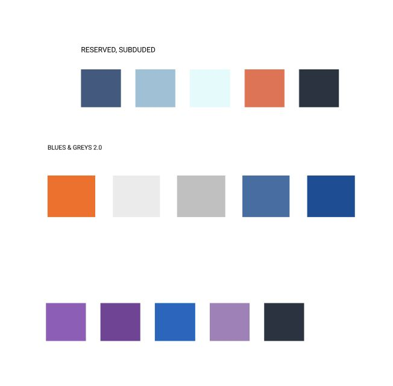
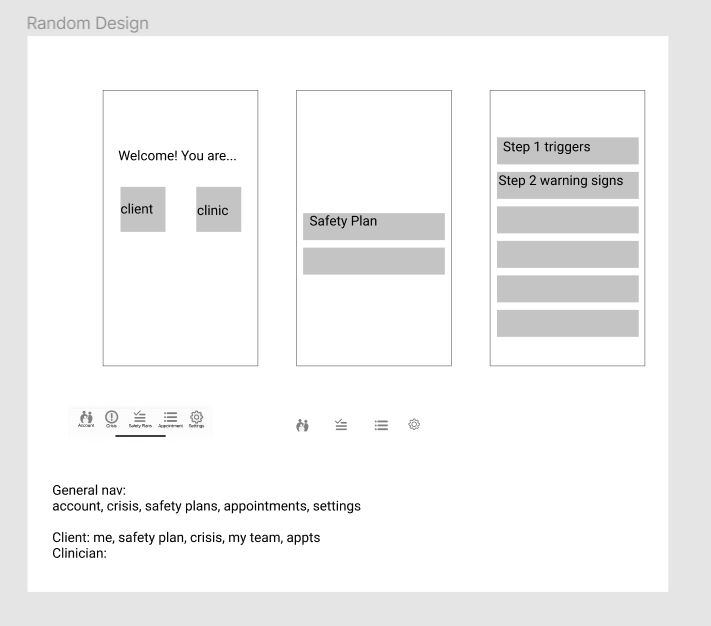
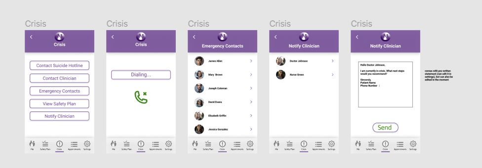

UX Studio
Worked with three other students at Rocheste Institute of Technology
in order to create a high-fidelity wireframe prototype for a local nonprofit.
We chose the Catholic Family Center, and wireframed an app for Crisis Intervention.
We began by choosing a color scheme that matched the website and foundation's
aesthetic.

We then began researching to see what other crsis intervention apps were structured like
and started getting a stronger idea of what was important. This helped us to develop some bare
bones lo-fi wireframes.

We quickly switched over to develop a hi-fi prototype which we then presented to
a panel of judges and all other participants.

Check out the wireframes on
Figma.